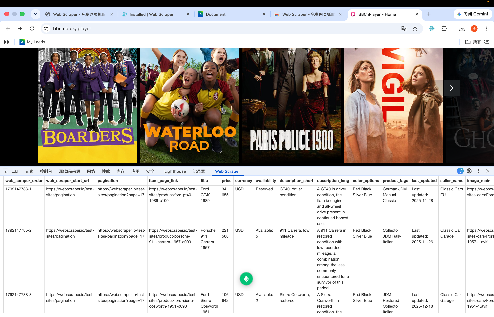

Barnsley
Joined the AND Festival in Barnsley—an incredible showcase of digital interactive art. A memorable day filled with creative media, thoughtful installations, and visual inspiration.
Hi, I'm Eliora. A Product and Interaction Design graduate, now exploring Digital Media Technology in Leeds. This is my digital space to record my UK journey, travel photography, and academic coursework.
Joined the AND Festival in Barnsley—an incredible showcase of digital interactive art. A memorable day filled with creative media, thoughtful installations, and visual inspiration.

A day at the place many people associate with Mr Darcy and Pemberley. A few photos, beautiful scenery, and impressions from my visit.
A hands-on digital media workshop project exploring web structure deconstruction, sitemap configuration, and automated data harvesting.

Successfully configured selectors using the Web Scraper browser extension to harvest structured content from the target web page, exported as a clean CSV dataset.
A space to document my learning journey, track my weekly progress, and reflect on course feedback.
This week introduced us to digital practices and the relationship between technology and society. Instead of viewing technology in isolation, I learned to think critically about how digital media both shapes and is shaped by our social context. It’s a great starting point for exploring digital media technology through both theory and practical work this semester.
This week focused on website structures, HTML/CSS basics, and publishing models. Coming from a background in App UI design, trying out CampusPress and GitHub for web creation was a completely new and challenging experience, but I will keep learning by combining AI and classroom tutorials. I ultimately chose GitHub to build my portfolio. Through this process, I also realized that I need to be more rigorous with my visual and textual layout details, and I will continue to explore and refine them.
This week, we explored the basics of web scraping, learning how to transform unstructured web content into structured, analyzable data (in CSV format) using pre-made tools such as browser extensions. During the practical workshop, I experienced the entire process of harvesting web data using the Web Scraper extension and successfully integrated the dataset and visual results into my personal portfolio. However, I also found that writing custom Python scripts for web scraping can be quite challenging and time-consuming, as it involves dealing with complex libraries and environmental setups. Therefore, I chose to gain a fundamental understanding of Python-based scraping without planning to dive deeply into it right now. By comparison, utilizing existing visual tools to understand the underlying data structures of digital media proved to be much more efficient and intuitive for me.
During the process of collecting and analyzing Reddit data using Communalytic, our team experienced a "sense of intrusion" regarding user privacy. Students posting about topics such as "AI cheating anxiety," "fear of academic misconduct," or "exam stress" shared their experiences under the expectation of anonymous community support, rather than anticipating becoming research subjects. To resolve this ethical dilemma while adhering to data protection and research standards, we implemented strategies of "De-identification" and "Qualitative-to-Quantitative Mapping": 1.Stripping Personal Identifiers: We completely removed all user IDs, exact timestamps, and direct URLs. 2.Converting Text to Numeric Data: By applying our 5-variable encoding dictionary, we transformed subjective, personal narrative posts into objective numeric codes (e.g., 1, 1, 3, 3, 1). This aggregated individual private experiences into broader, anonymized behavioral patterns. This reflection highlighted that data analysis goes beyond technical scraping and coding—it requires fundamental respect for data subjects. In future research, we will maintain strong ethical awareness to ensure public data is handled legally, responsibly, and with full privacy protection.
Your detailed feedback and reflection text for Week 5 will go here.